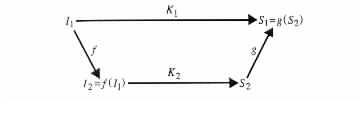
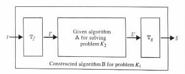

A common approach in solving problems is to transform them to different problems, solve the new ones, and derive the solutions for the original problems from those for the new ones. This approach is useful when the new problems are simpler to solve, or when they already have known algorithms for solving them. A similar approach is also very useful in the classification of problems according to their complexity.
A problem K1, which can be transformed to another problem K2, is said to be reducible to the new problem. Specifically, a problem K1 is said to be reducible to a problem K2 if there exist computable total functions f and g with the following properties (see Figure 1.5.1).
|

|
Example 1.5.1
Let Y be the set { m | m = 2i for some integer i }. The problem of exponentiation of
numbers from Y is reducible to the problem of multiplication of integer numbers.
The reducibility is implied from the equalities xy = (2log x)y = 2y·log x,
which allow the choice of f(x, y) = (y, log x) and g(z) = 2z for f and g,
respectively.1
Example 1.5.2
Let KØ and Kº be the emptiness problem and the equivalence problem for programs,
respectively. Then KØ is reducible to Kº by functions f and g of the following form. f is
a function whose value at program P is the pair of programs (P, PØ). PØ is a program that
accepts no input, for example, the program that consists only of the instruction
reject. g is the identity function, that is, g(yes) = yes and g(no) = no.
If K1 is a problem that is reducible to a problem K2 by total functions f and g that are computable by algorithms Tf and Tg, respectively, and K2 is solvable by an algorithm A, then one can also get an algorithm B for solving K1 (see Figure 1.5.2).
|

|